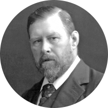

|
 Bram Stoker Stoker visited the English coastal town of Whitby in 1890, and that visit was said to be part of the inspiration for Dracula. He began writing novels while working as manager for Irving and secretary and director. During this period, Stoker was part of the literary staff in London, and he wrote other fiction, including the horror novels.He published his Personal Reminiscences of Henry Irving in 1906, after Irving's death, which proved successful,[5] and managed productions at the Prince of Wales Theatre.Before writing Dracula, Stoker met Ármin Vámbéry, a Hungarian-Jewish writer and traveller (born in Szent-György, Kingdom of Hungary now Svätý Jur, Slovakia). Dracula likely emerged from Vámbéry's dark stories of the Carpathian mountains. Stoker then spent several years researching Central and East European folklore and mythological stories of vampires.The 1972 book In Search of Dracula by Radu Florescu and Raymond McNally claimed that the Count in Stoker's novel was based on Vlad III Dracula. At most however, Stoker borrowed only the name and "scraps of miscellaneous information" about Romanian history, according to one expert, Elizabeth Miller; further, there are no comments about Vlad III in the author's working notes.Dracula is an epistolary novel, written as a collection of realistic but completely fictional diary entries, telegrams, letters, ship's logs, and newspaper clippings, all of which added a level of detailed realism to the story, a skill which Stoker had developed as a newspaper writer. At the time of its publication, Dracula was considered a "straightforward horror novel" based on imaginary creations of supernatural life. "It gave form to a universal fantasy ... and became a part of popular culture." |
Comments / Suggestions We want to hear from you! If you have any comments or suggestions on things you'd like to see on the site please let us know. |
| © 2009 a classic horror authors website |